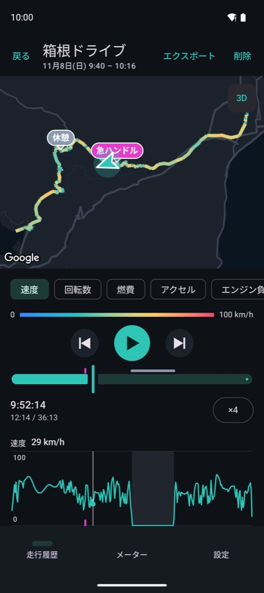
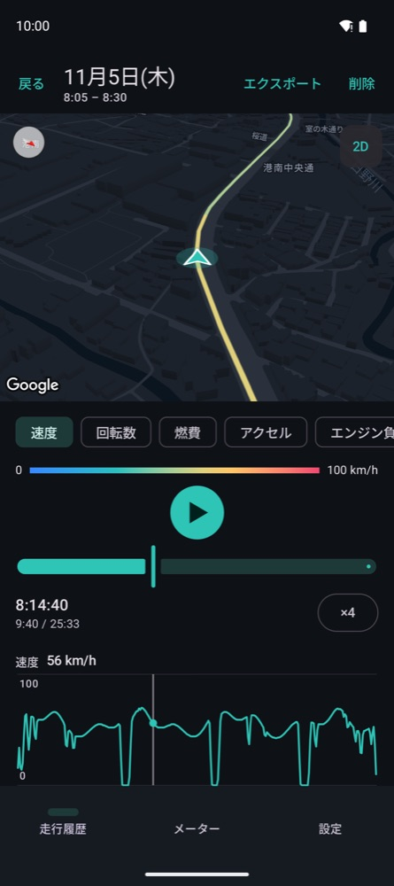
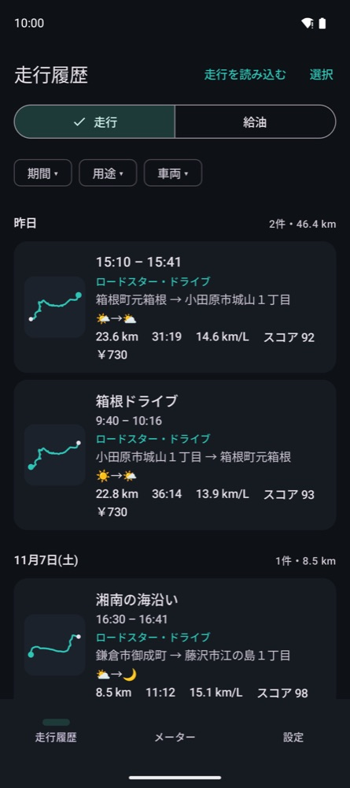
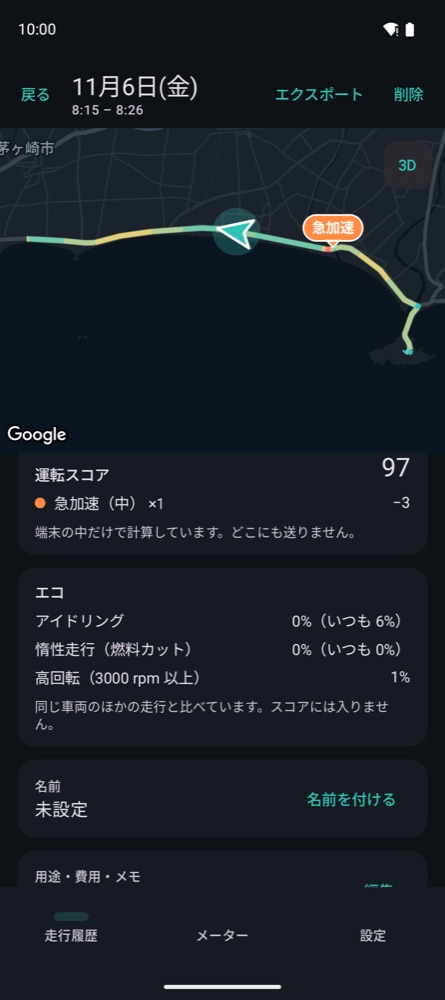
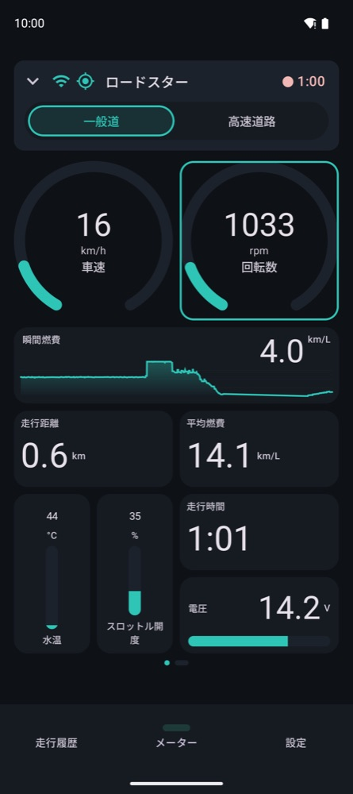
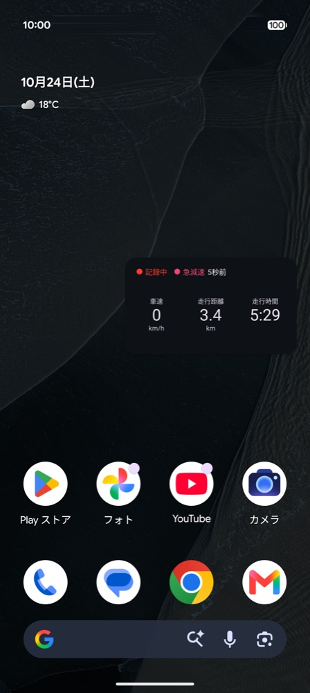
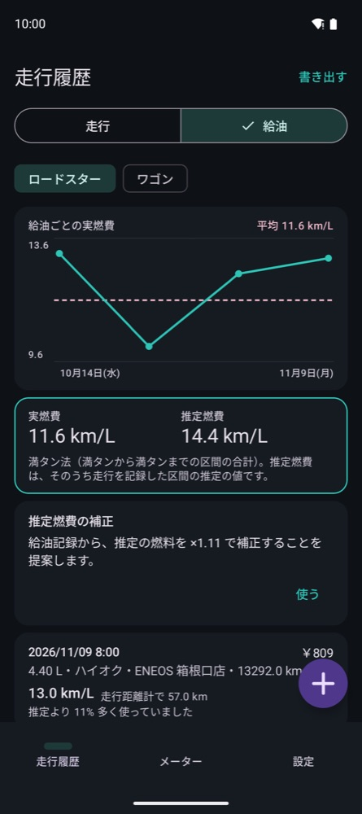

地図でリプレイ
走ったルートを、速度・回転数・燃費などで色分けして地図に描きます。再生すると車が地図の上を走り、メーターとグラフも一緒に動きます。急ブレーキなどのイベントには、地図とグラフに印が付きます。


CarReplotter は、OBD2 アダプターと GPS で走行を記録し、速度・回転数・燃費と合わせて地図の上で再生できるアプリです。

走ったルートを、速度・回転数・燃費などで色分けして地図に描きます。再生すると車が地図の上を走り、メーターとグラフも一緒に動きます。急ブレーキなどのイベントには、地図とグラフに印が付きます。

地図を傾けて、車の後ろから見下ろす 3D で再生できます。建物が立体で出る街なら、走った道の景色がよみがえります。

日ごとの一覧に、ルートの小さな地図、距離、燃費、天気、運転スコアが並びます。期間・用途・車両で絞り込めます。

スコアは端末の中で計算します。どのイベントで何点減ったかを地図で確かめられ、エコの評価も出ます。


メーターに出す項目と配置を自由に変えられます。ナビを使っている間は、小さなウィンドウで速度などを出し続けます。

満タン法で給油を記録すると、実際の燃費とアプリが推定した燃費を比べられます。差があれば、推定の補正を提案します。
Bluetooth Low Energy・Wi-Fi の ELM327 互換 OBD2 アダプターに対応しています。アダプターがなくても GPS だけで記録できます。
走った場所の記録は、端末の外には送りません。アカウントもサーバーもなく、広告や利用状況の分析もありません。くわしくはプライバシーポリシーをご覧ください。